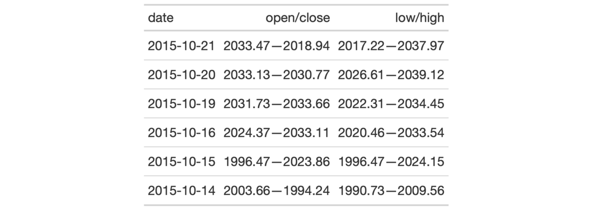

| cols_merge {gt} | R Documentation |
This function takes input from two or more columns and allows the contents to
be merged them into a single column, using a pattern that specifies the
formatting. We can specify which columns to merge together in the columns
argument. The string-combining pattern is given in the pattern argument.
The first column in the columns series operates as the target column (i.e.,
will undergo mutation) whereas all following columns will be untouched.
There is the option to hide the non-target columns (i.e., second and
subsequent columns given in columns).
cols_merge(
data,
columns,
hide_columns = columns[-1],
pattern = paste0("{", seq_along(columns), "}", collapse = " ")
)
data |
A table object that is created using the |
columns |
The columns that will participate in the merging process. The first column name provided will be the target column (i.e., undergo mutation) and the other columns will serve to provide input. |
hide_columns |
Any column names provided here will have their state
changed to |
pattern |
A formatting pattern that specifies the arrangement of the
|
There are three other column-merging functions that offer specialized
behavior that is optimized for common table tasks: cols_merge_range(),
cols_merge_uncert(), and cols_merge_n_pct(). These functions operate
similarly, where the non-target columns can be optionally hidden from the
output table through the autohide option.
An object of class gt_tbl.

4-12
Other Modify Columns:
cols_align(),
cols_hide(),
cols_label(),
cols_merge_n_pct(),
cols_merge_range(),
cols_merge_uncert(),
cols_move_to_end(),
cols_move_to_start(),
cols_move(),
cols_unhide(),
cols_width()
# Use `sp500` to create a gt table;
# merge the `open` & `close` columns
# together, and, the `low` & `high`
# columns (putting an em dash between
# both); rename the columns
tab_1 <-
sp500 %>%
dplyr::slice(50:55) %>%
dplyr::select(-volume, -adj_close) %>%
gt() %>%
cols_merge(
columns = c(open, close),
pattern = "{1}—{2}"
) %>%
cols_merge(
columns = c(low, high),
pattern = "{1}—{2}"
) %>%
cols_label(
open = "open/close",
low = "low/high"
)